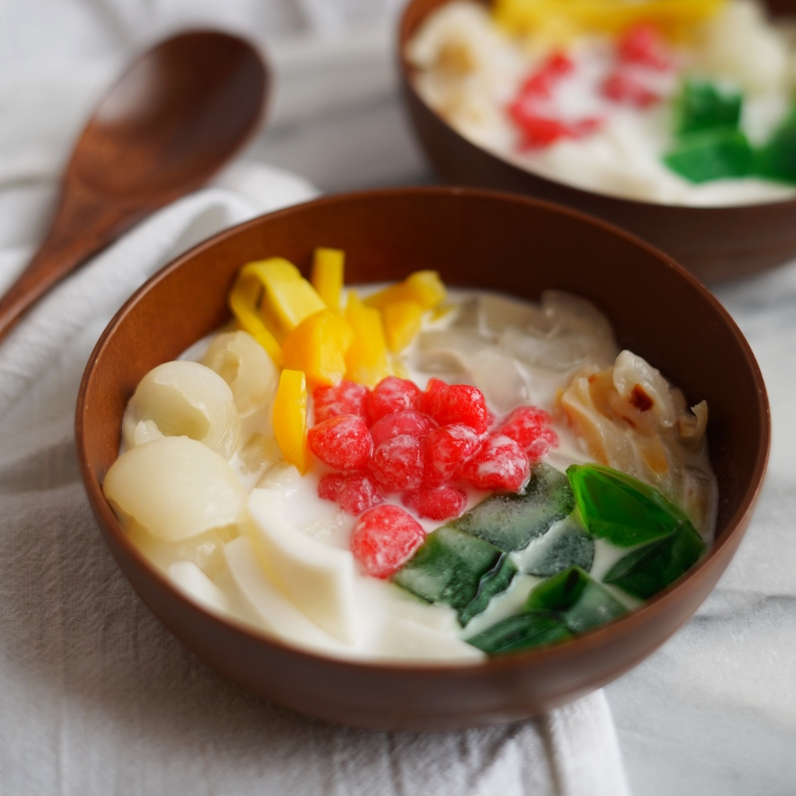
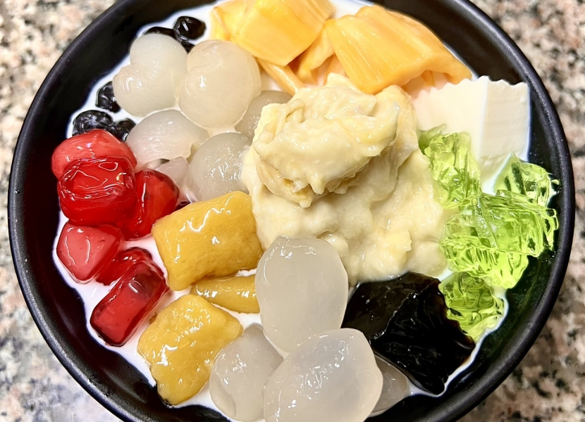

Chè Thái
Chè Thái là món tráng miệng nổi tiếng với sự kết hợp đa dạng của các loại trái cây tươi, thạch nhiều màu sắc, hạt lựu dai giòn cùng nước cốt dừa béo ngậy, thơm lừng. Món chè này không chỉ hấp dẫn về hương vị mà còn đẹp mắt với màu sắc rực rỡ, mang đến cảm giác thanh mát, ngọt ngào, rất thích hợp để giải nhiệt trong những ngày nóng bức.



Nguyên liệu
- Mít chín: 300g (chọn mít dai, thơm, múi to, cắt sợi vừa ăn)
- Nhãn hoặc vải thiều: 200g (bóc vỏ, bỏ hạt, có thể để nguyên hoặc cắt đôi tùy kích thước)
- Thạch rau câu: 200g (có thể dùng thạch rau câu nhiều màu sắc mua sẵn hoặc tự làm, cắt hạt lựu hoặc sợi)
- Hạt lựu (trân châu): 100g (hạt lựu làm từ củ năng hoặc bột năng, tạo độ dai giòn)
- Nước cốt dừa: 150ml (chọn loại cốt dừa tươi hoặc đóng hộp nguyên chất để có độ béo và thơm ngon nhất)
- Sữa đặc: 100g (điều chỉnh lượng tùy theo khẩu vị ngọt của bạn)
- Đường: 50g (đường cát trắng, tùy chỉnh theo khẩu vị, dùng để pha nước cốt và ngâm hạt lựu)
- Đá bào: 200g hoặc đủ dùng (đá bào mịn sẽ giúp chè mát lạnh nhanh và hòa quyện hơn)
- Lá dứa (lá nếp): 1-2 lá (tùy chọn, để tạo mùi thơm cho nước cốt dừa)
Cách làm
-
Bước 1: Sơ chế và chuẩn bị các loại topping
- Mít: Tách múi mít, bỏ hạt, thái mít thành sợi vừa ăn.
- Nhãn/Vải: Bóc vỏ, bỏ hạt. Nếu quả to có thể cắt đôi.
- Thạch rau câu: Nếu mua thạch sẵn, rửa sạch, cắt hạt lựu hoặc sợi. Nếu tự làm, nấu thạch theo hướng dẫn, để đông rồi cắt.
-
Hạt lựu (trân châu củ năng):
- Nếu dùng củ năng: Gọt vỏ củ năng, cắt hạt lựu nhỏ. Luộc củ năng trong nước sôi khoảng 2 phút, vớt ra để ráo.
- Trộn củ năng đã luộc với một ít đường và màu thực phẩm (màu đỏ, xanh lá cây...) cho đều. Sau đó, áo một lớp bột năng mỏng bên ngoài, xóc đều để bột bám vào củ năng.
- Luộc hạt lựu trong nồi nước sôi cho đến khi hạt nổi lên, chuyển màu trong và có độ dai giòn. Vớt ra, cho ngay vào tô nước đá lạnh để hạt không bị dính và giữ độ giòn.
- Ngâm hạt lựu đã luộc trong nước đường pha loãng để hạt có vị ngọt và bóng đẹp.
-
Bước 2: Pha nước cốt dừa
- Trong một nồi nhỏ, cho 150ml nước cốt dừa, 100g sữa đặc và 50g đường vào.
- Nếu dùng lá dứa, cho lá dứa đã rửa sạch, buộc gọn vào nồi cùng hỗn hợp nước cốt dừa.
- Đun hỗn hợp trên lửa nhỏ, khuấy đều cho đường tan hoàn toàn. Khi hỗn hợp vừa sôi lăn tăn (không đun sôi bùng) thì tắt bếp. Việc này giúp nước cốt dừa thơm hơn và không bị tách dầu.
- Để hỗn hợp nước cốt dừa nguội hoàn toàn. Sau đó, có thể cho vào tủ lạnh để làm mát.
-
Bước 3: Trình bày và hoàn thiện
- Lấy ly hoặc bát lớn. Cho lần lượt các loại topping đã chuẩn bị vào: mít thái sợi, nhãn/vải, thạch rau câu, hạt lựu.
- Thêm đá bào vào ly, lượng đá tùy theo sở thích của bạn (có thể cho đầy ly hoặc một nửa).
- Từ từ đổ hỗn hợp nước cốt dừa đã nguội và làm mát lên trên đá bào và các loại topping.
-
Bước 4: Thưởng thức
- Khi thưởng thức, dùng muỗng khuấy đều các thành phần trong ly để hương vị hòa quyện vào nhau.
- Chè Thái ngon nhất khi được dùng lạnh.
Mẹo nhỏ để Chè Thái ngon hơn:
- Chọn trái cây: Chọn mít dai, thơm, nhãn/vải tươi ngon để chè có hương vị tự nhiên và hấp dẫn.
- Hạt lựu: Để hạt lựu dai giòn và có màu sắc đẹp, bạn nên áo bột năng đều và luộc nhanh, sau đó ngâm ngay vào nước đá lạnh.
- Nước cốt dừa: Nước cốt dừa là linh hồn của món chè Thái. Nên dùng loại cốt dừa tươi hoặc đóng hộp chất lượng cao. Khi nấu, không đun sôi quá lâu để tránh bị tách dầu.
- Độ ngọt: Điều chỉnh lượng đường và sữa đặc theo khẩu vị cá nhân. Bạn có thể nếm thử hỗn hợp nước cốt dừa trước khi làm lạnh để đảm bảo độ ngọt vừa ý.
- Đá bào: Sử dụng đá bào mịn sẽ giúp chè mát lạnh nhanh chóng và hòa quyện tốt hơn với các nguyên liệu khác.
- Làm lạnh: Chè Thái ngon nhất khi được làm lạnh hoàn toàn. Bạn có thể làm lạnh riêng phần nước cốt dừa và các topping trước khi lắp ráp.
- Sáng tạo topping: Ngoài các nguyên liệu cơ bản, bạn có thể thêm các loại topping khác như sương sáo, thạch lá dứa, trân châu, hoặc các loại trái cây khác như xoài, dâu tây để món chè thêm phong phú và hấp dẫn.
▶️ Xem video hướng dẫn chi tiết
← Quay lại trang chủ
Bình luận và Đánh giá
Đánh giá của bạn
Chưa có bình luận nào.